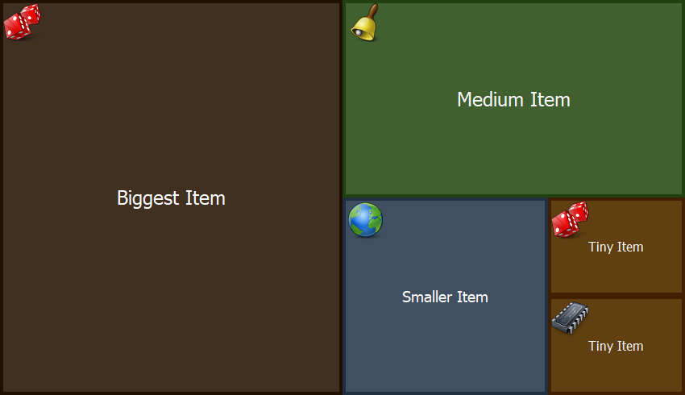

TreeMap Component for Delphi
Copyright 2026 by Rezar Behzad and Ingo Jache https://www.fe1.com/treemap/Introduction
TTreeMap is a Delphi/VCL component that lays out and renders a list of items using the squarified treemap algorithm. The algorithm takes a list of items with associated weights and arranges them on a 2D surface as a set of rectangles: each rectangle's area reflects its item's weight relative to all items, while the layouter keeps the rectangles' aspect ratios as close to square as possible.
The component has decent performance, is customizable, and supports mouse interaction and selection. It is self-contained in a single Delphi unit and requires no third-party libraries.

The layouter is based on this paper: https://vanwijk.win.tue.nl/stm.pdf. It explains the idea and the individual steps well, but its pseudocode and equations — in particular the one for computing the squariness — appear to be broken or at least misleading; this component uses a corrected implementation.
Installation
There are two ways to install the component:
Package-based: double-click the corresponding
.dpkfile to open the package in Delphi, then right-click the package root and choose Install.No-install: because the component is a single file, you can also drop it into your project folder or search path and use it from there.
Basic usage
If you installed the package, just drag the TreeMap component onto your form and you are ready to go. If you prefer to create it from code:
MyTreeMap := TTreeMap.Create(Self); MyTreeMap.Parent := Self;
There is no item editor in the IDE, but adding items is simple:
var Item: TTreeMapItem; begin Item := TTreeMapItem.Create(100, 'Item 1'); MyTreeMap.Items.Add(Item); end;
The constructor of TTreeMapItem has two mandatory parameters — the item's Size (its weight) and its Caption (the text shown on the tile) — and three optional ones: BackgroundColor, ForegroundColor and Data (an arbitrary pointer that links the item to your own data). A full example:
TTreeMapItem.Create(10, 'Biggest Item', $203040, $F8F8F8, nil);
When adding large numbers of items, enclose your Add/Remove calls between TTreeMap.BeginUpdate and TTreeMap.EndUpdate to suppress redraws until every item has been added — just as you would with TListBox and other standard components.
Reacting to input
Assign TTreeMap.OnClickItem or TTreeMap.OnDblClickItem to respond to clicks; both handlers receive the clicked TTreeMapItem, the mouse button and the item's state. You can also look up the item under any point directly with TTreeMap.GetItemAt.
Customization
The component has a default painter that styles each tile from a mix of the item's own properties and these component-level properties:
MyTreeMap.BorderSize := 4;
MyTreeMap.BackgroundColor := clBlue;
MyTreeMap.SelectionColor := clYellow;
Tiles can also show an icon: assign an image list to TTreeMap.Images and set each item's TTreeMapItem.ImageIndex.
For full control, the TreeMap supports custom drawing, much like standard components such as TListView. Assign a handler to the TTreeMap.OnDrawItem event:
MyTreeMap.OnDrawItem := Self.CustomDrawItem;
procedure TForm1.CustomDrawItem( Sender: TObject; // the TTreeMap instance requesting the draw Canvas: TCanvas; // the canvas to draw the item on Item: TTreeMapItem; // the item to be drawn State: TTreeMapItemStates; // the item's state: hover, selected var Area: TRect // the rectangle to draw the item in ); begin // ... end;
Note that Area is a var parameter. If your items are nested (top-level items have children), you may want to draw the parent as a thin title bar and let the children fill the remaining space. To have the children laid out and drawn, leave that remaining space in Area; to suppress them, set Area to Rect(0, 0, 0, 0):
procedure TForm1.CustomDrawItem( Sender: TObject; Canvas: TCanvas; Item: TTreeMapItem; State: TTreeMapItemStates; var Area: TRect ); const TitleBarSize = 48; var PaintArea: TRect; begin if not Item.HasChildren then begin // no children: use the entire area PaintArea := Area; Area := Rect(0, 0, 0, 0); end else begin // children will be drawn: split the space PaintArea := Rect(Area.Left, Area.Top, Area.Right, Area.Bottom - TitleBarSize); Area := Rect(Area.Left, Area.Top + TitleBarSize, Area.Right, Area.Bottom); end; // ... paint the item into PaintArea ... end;
Demos
The simple demo shows the shortest possible use of the TreeMap component.
The showcase demo goes further: mouse interaction, nested treemaps and rendering to bitmaps.
Generated by PasDoc 1.0.4.